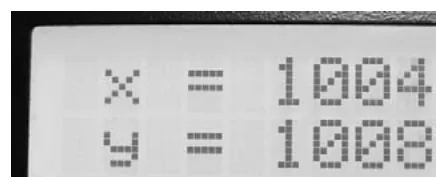
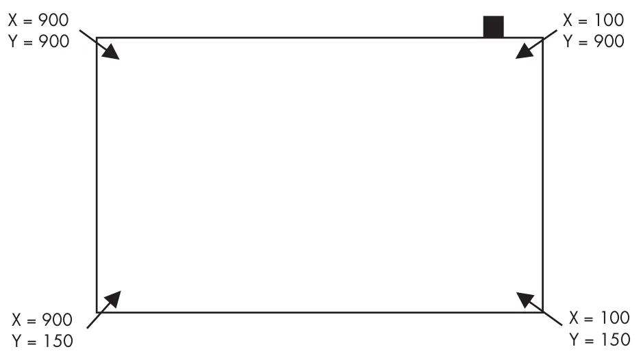

The touchscreen has two layers of resistive coating between the top layer of plastic film and the bottom layer of glass. One coating acts as the x-axis, and the other is the y-axis. As current passes through each coating, the resistance of the coating varies depending on where it has been touched, so when each current is measured, the X and Y positions of the touched area can be determined.
In this project, we’ll use the Arduino to record touched locations on the screen and to convert the touches to integers that can be used to reference areas of the screen.
The Hardware
The following hardware is required:
- Touchscreen and breakout board
- One 10 kΩ trimpot
- One 16×2-character LCD module
- Various connecting wires
- One breadboard
- Arduino and USB cable
Connect the touchscreen as described in Table 10-1, and connect the LCD module as described in Figure 7-2 on page 149.
The Sketch
Enter and upload the following sketch. I’ve highlighted important aspects of the sketch with comments:
// Project 34 - Addressing Areas on the Touchscreen
#include <LiquidCrystal.h>
LiquidCrystal lcd(4,5,6,7,8,9);
int x,y = 0;
void setup()
{
lcd.begin(16,2);
lcd.clear();
}
❶ int readX() // returns the value of the touchscreen's x-axis
{
int xr=0;
pinMode(A0, INPUT);
pinMode(A1, OUTPUT);
pinMode(A2, INPUT);
pinMode(A3, OUTPUT);
digitalWrite(A1, LOW); // set A1 to GND
digitalWrite(A3, HIGH); // set A3 as 5V
delay(5);
xr=analogRead(0); // store the value of the x-axis
return xr;
}
❷ int readY() // returns the value of the touchscreen's y-axis
{
int yr=0;
pinMode(A0, OUTPUT); // A0
pinMode(A1, INPUT); // A1
pinMode(A2, OUTPUT); // A2
pinMode(A3, INPUT); // A3
digitalWrite(14, LOW); // set A0 to GND
digitalWrite(16, HIGH); // set A2 as 5V
delay(5);
yr=analogRead(1); // store the value of the y-axis
return yr;
}
void loop()
{
lcd.setCursor(0,0);
❸ lcd.print(" x = ");
x=readX();
lcd.print(x);
y=readY();
lcd.setCursor(0,1);
❹ lcd.print(" y = ");
lcd.print(y);
delay (200);
}The functions readX() and readY() at ❶ and ❷ read the currents from the touchscreen’s resistive layers, measure the current using analogRead(), and return the read value. The sketch rapidly runs these two functions to provide a real-time position of the screen area being touched and displays this on the LCD at ❸ and ❹. (The delay(5) in each function is required to allow the input/output pins time to change their states.)
Testing the Sketch
To test the sketch, monitor the LCD module while you touch the screen, and notice how the X and Y values change relative to the touched position on the screen. Also notice the values displayed when the screen is not being touched, such as those shown in Figure 10-3.

It is important that you note these values, because you can use them to detect when the screen is not being touched in your sketch.
Mapping the Touchscreen
By touching the corners of the touchscreen and recording the values returned, you can actually map the touchscreen, as shown in Figure 10-4. Basically, you’re plotting the coordinates for each corner. Once you have determined these values, you can divide up the touchscreen map into smaller areas for use as control surfaces.

After you’ve created your touchscreen map, you can divide it into smaller regions and use the functions readX() and readY() to create a variety of control regions on the screen, which you can then use with if-then statements to cause specific actions to occur depending on where the screen is touched, as you’ll see in Project 35.